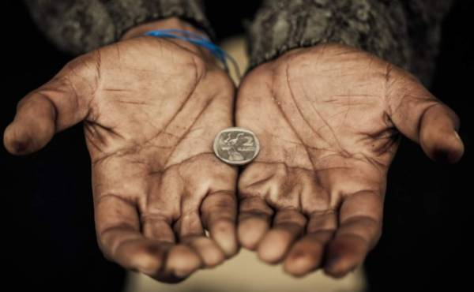
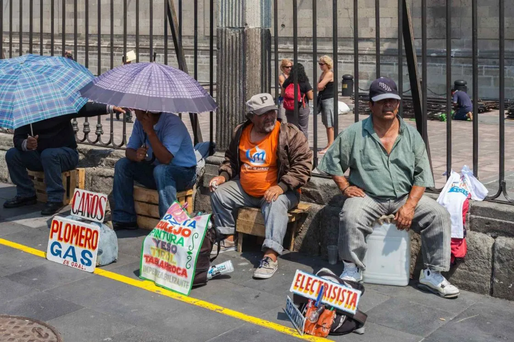
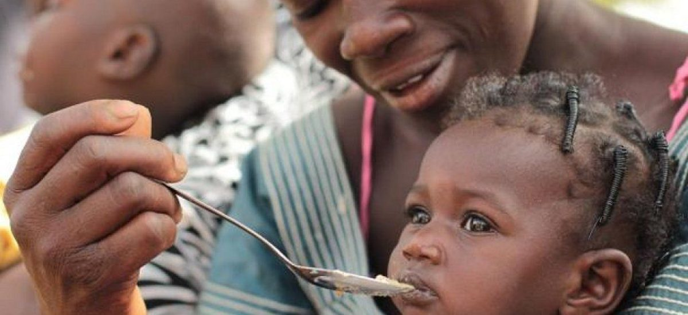

¿Qué es la pobreza?
La pobreza es un fenómeno multidimensional que puede traducirse en factores objetivos, como la falta de recursos para satisfacer las necesidades básicas para la supervivencia.

O subjetivos, tal cual la privación de la participación social por cuestiones relacionadas al género.
¿Por qué hay tanta pobreza en el mundo?

La pobreza tiene muchas dimensiones, pero sus causas son:
El desempleo
La exclusión social
Alta vulnerabilidad de determinadas poblaciones a los desastres
Enfermedades
¿Cómo es la pobreza en México?
A 2020, 43.9% de la población en México está en situación de pobreza (55.7 millones de personas), lo que representa un incremento de dos puntos porcentuales en comparación con 2018 (41.9%), equivalente a 3.8 millones de personas adicionales.
Las entidades federativas con mayor porcentaje de población en pobreza extrema son:
- Chiapas (29%)
- Guerrero (25.5%)
- Oaxaca (20.6%)
Sin embargo, Quintana Roo, Tlaxcala y Yucatán son las entidades que tuvieron un mayor aumento en la proporción de su población en esta situación respecto a 2018.

¿Cuáles son las principales causas y consecuencias de la pobreza en México?
Principales causas:
Corrupción
Fuerte carencia de empleo
Trabajos mal remunerados
Desempleo de aproximadamente 4%

Principales consecuencias
Desnutrición
Abandono escolar y trabajo infantil
Inseguridad ciudadana y aumento de la prostitución.
Migración
¿Por qué es impirtante ponerle fin?
Más de 700 millones de personas siguen viviendo en condiciones de pobreza extrema y luchan para satisfacer sus necesidades más básicas, como la salud, la educación y el acceso al agua y el saneamiento, por mencionar algunas.
Es una gran cantidad de personas.

Aproximadamente la mitad de los pobres del mundo viven en países de ingresos medianos bajos como China, la India, Indonesia y Nigeria. Sin embargo, este problema afecta también a los países desarrollados.
Actualmente hay 30 millones de niños que crecen pobres en los países más ricos del mundo.
¿Qué podemos hacer al respecto?
Si eres joven tu participación activa en la formulación de políticas puede marcar la diferencia en la lucha contra la pobreza.
Con ella te aseguras de que se promueven tus derechos y de que se escucha tu voz, de que se comparten los conocimientos intergeneracionales y de que a todas las edades se fomenta la innovación y el pensamiento crítico, en apoyo de un cambio transformador en las vidas de las personas y
las comunidades.
Aquí te dejamos algunas acciones que puedes hacer para combatir la pobreza:
- Involucrar a todo tu entorno contra la pobreza
- Donaciones
- Comercio justo
- Consumo responsable y sostenible
- Centros comunitarios y sociables
- Apadrinar
- Bancos de alimentos
- Promover debates sobre la pobreza
- Voluntariado
- Ayudar con alimentos, agua o ropa